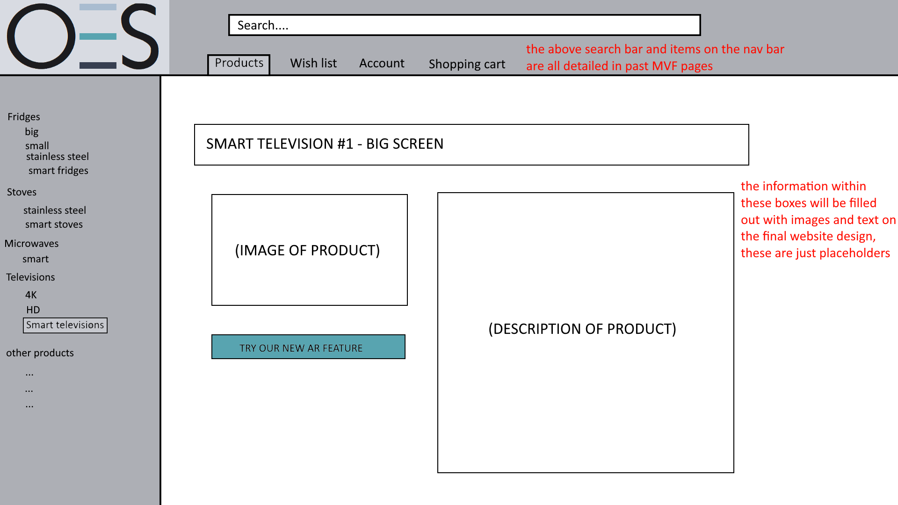

Upload Image - MVF 5.1 for OES website
Team member in charge of MVF - Jacob Bell
Part 1 - Original plans and low fidelity diagrams
Original plans -
The original idea for this feature was founded on the fact that our main innovative feature was going to be some form of augmented reality in which a user uploads an image of a room or space and the website superimposes another image of a product onto the user uploaded image. Hence we needed a function that would allow the users to upload an image onto the website, the website to then store and then display said image back to the user, with the product placed on top of that.
As we assumed that this was a little too much work for 1 person we decided to split up the AR feature into two sections, one being the superimposing of a product and the second being the functionality required for a user to upload an image of their own, hence this MVF was created.
After some discussion in following team meetings we decided to include an option for the user to save the combined image onto their computer, as it increases the overall user experience and would generally be needed for a function such as this, as so this MVF features the functionality to both upload to and then save images from the OES website.
It was also important to our group that we decided on an overall page layout, style and color scheme so that we may work on our individual work without the constant need to ask questions and double check that everyone is on the same page. As such we developed a logo, of which can be seen in the top left of this page, that incorporates both our general style as well as the colour scheme that will be used for the final OES website.
Low fidelity diagrams -
After the general concept for all 6 MVF’s were decided upon and each member was assigned to a specific MVF, we all set out to produce some low fidelity mock-ups and diagrams that would allow for a visual representation of our ideas, the diagrams that i had created can be found below.
Low Fidelity diagram 1 - this diagram shows the header, logo, product section, drop down menu and a single page displaying information about a product. Held within the product page is a button that allows the user to ‘Try our new AR feature’, of which will take them to another page where they can do such a task.
Low fidelity diagram 2 - This diagram continues with the overall set style but includes the pop-up page detailing the AR feature we will be creating for this project. The diagram also details some of the features present within said page, as can be seen with the red arrows and text.

Basic functionality flowchart - This flowchart details a basic operation that a user might perform to both get to the upload image section and what they might do when they actually utilize the feature, this is just one scenario that relies upon the influence of some other MVF’s but gives a general idea of of how this feature will function in conjunction to said features as well as the website as a whole.
Part 2 - High fidelity, user stories and user testing
Introduction -
Now that i have gained a general understanding of how this feature works within the confined of the OES website, gained the approval and feedback from my team members and tutor i can now begin working on a higher level prototype which will in turn allow me to create some user stories and undergo user testing to gain feedback and improve upon my designs heading forward.
High fidelity prototype -
link to high fidelity prototype
This is a prototype of the upload image MVF, i have incorporated a similar style and layout to my original low fidelity diagrams in accordance to our teams needs and agreed upon prerequisites. This allows a user to experience a straightforward and guided walkthrough of how this feature will eventually be implemented into the OES website as well as how it will function.
Throughout the creation process of this process i had to alter some design elements according to the needs of the group, specifically within the two images shown below, we as a group decided not to include any pop up windows within our webpage and as such i altered the prototype slide to adjust for those requirements.
This slide instead became the one below.

Here is the updated version of the above slide, instead of containing a pop-up window the information is displayed all on one screen.
Using this prototype I have created some user stories detailing some of the potential scenarios that our system may experience if we were to release it publicly, ultimately allowing us to gain perspective on some of the potential usability issues and anything else that we may have missed or paid no attention to during the design process.
In addition to this I have undergone an instance of user testing using this prototype as the primary example for our eventual website. This would allow me to again, gain more information about the user experience and get valuable feedback on the system, design, layout and most importantly how the feature functioned according to a user who had no idea of what our original plans were.
User stories -
User story 1 - Bob
Scenario: Bob wished to purchase a new television for his living room as his old one broke and he had to throw it out, he wishes to buy one that is a lot larger than his old television but is not sure if it will fit on his table. Bob wishes to use the OES website to both find a television and see if it will fit in his room.
Acceptance criteria:
Bob wishes to be able to easily navigate to the page in which all televisions are listed.
Bob wishes to be able to easily scroll through this page and choose the television that catches his interest.
Bob wishes to be able to read a detailed description of the television he chooses.
Bob wants to then use the Augmented reality feature to view how said television will look inside his room.
Bob wishes to be able to easily upload an image from his computer using normal methodology as well as save the uploaded image after the OES website superposes the product onto said image.
After Bob is happy with all the above steps he wishes to be able to purchase the television and have it shipped to his home.
User story 2 - Sarah
Scenario: Sarah is in the market for a new fridge and she has decided on purchasing a smart fridge. She has a large cut out in her kitchen for such a product but wants to get a feel for how a fridge would look in the space before making a purchase. As such Sarah wants to browse through a long list of smart fridges and make multiple superimposed images to sort through and choose whichever one she likes the most.
Acceptance criteria:
Sarah wishes to be able to easily navigate to the list of available smart fridges as well as have the ability to easily scroll through said list.
Sarah wishes to be able to sort through these fridges by ascending price.
Sarah wishes to open multiple tabs and create multiple superimposed images using the AR feature with many different smart fridges, saving all of them onto her computer.
Sarah wishes to upload different angles of her image to allow her to get a clearer picture as to how this fridge will look in her kitchen.
After she chooses her favourite one from all her saved images, she wishes to be able to easily purchase said smart fridge and have it delivered to her home.
User testing -
User name - Riley
Occupation - Brother, high school student
Age - 17
Scenario: navigate to the product section, find a smart television, upload an image onto the augmented reality feature, save the newly created image.
Questions:
Do you agree to participate in this user testing scenario?
Yes.
How did you find the user interface of the prototype?
It was ok, everything was easy to read.
Did you like the color scheme of the prototype?
Yes, it was alright.
Was it easy to locate the product section and the Augmented reality feature?
After a while I found it pretty easily, some of the text could have been more bold or larger.
Did the prototype match other websites designs?
Yes, it reminded me of some normal shopping websites, just without any of the information or pictures.
Would you add anything to the current website?
Just some information and some clearer headings for the products, and images for the products.
Conclusion: disregarding the lack of information and images as those will be added by another group member. The general functionality of the website in relation to the upload image feature seemed fairly responsive and easy to use, the conventions we implemented were not perfect and could be improved. Some of the text and icons could appear larger and more clear, but other than that and a few smaller details i think we have a good starting point for finalising and creating this website, at least in relation to the upload image feature.
Error prevention -
As this section of MVF5 is fairly simple the error prevention primarily comes from issues involving the uploading and saving of images. If a user was to attempt to upload too many images an error message would pop up instructing them on how to correctly perform their action. If there was an issue involving the saving of an image the system would tell the user an error and ask them to try again. If the system was to fail in some way it would ask the user to refresh the page and try again. Below are some examples of potential errors that a user may experience.
System context diagram for MVF5.1 -
superpose image - MVF 5.2 for OES website
Team member in charge of MVF - Joshua Kreppold
MVF description and low fidelity mock-ups
The purpose of this feature on our e-commerce websiteis is to be a Augmented reality function. In practise this would allow for a superimposed image of a product to be depicted on a picture uploaded via the customer. This acts as a way for the customer to view what our product would look like in a potential space of their choosing, before buying.
Low fidelity diagram 1
This digram shows the page straight after using the upload photo function. For this design
we decided to have the function operate within a pop-up page. Although we later revise this so that scrolling will bring up the
function. From this point in the diagram the user can either cancle, presse the impose featrue to activate the function or upload a
differing image by pressing 'upload image' again

Low Fidelity diagram 2
This page was the final result at this point in time. It shows the superimposed
image fitting in the dimenstions of the users uploaded image. From this point that can either straight exit, upload a new picture to impose
or save the current image.

Post group meeting:
After creating all our mock-up diagrams indivadually we meet for a team meeting to go over our work, from the meeting we decded to make a few chnages. We ended up slighty revising our mockups as to make them better. These are depicted below.
Reworked prototype 1
The main change in our our design was related to how the user views the overall function, instead of having a pop up box we deicde to have a scroll function. The motivation for this design choice was that some people may find popup boxes annyoing and that a scroll function is overall alot more smother and user friendly.
Not many changers were made to the actual function, with the key differance in these slides showing how the function will be displayed